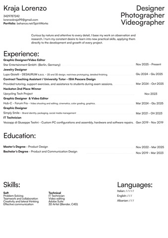
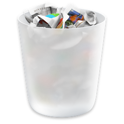

PDF
ARC
archive
MP4
reel.mp4

curriculum.pdf — Document Viewer
File
Edit
View
Go
Help
Kraja Lorenzo
Designer
Photographer
Videographer
Curious by nature and attentive to every detail, I base my work on observation and research. I turn my constant desire to learn into new practical skills, applying them directly to the development and growth of every project.
Experience:
Graphic Designer / Video Editor
Nov 2025 - Present
Star Entertainment GmbH - (Berlin, Germany)
Jewelry Designer
Giu 2024 - Giu 2025
Lupo Gioielli - DESAURUM s.a.s.
2D and 3D design, resin/wax prototyping, detailed finishing.
Contract Teaching Assistant / University Tutor - ISIA Pescara
Design
Mar 2024 - Oct 2025
Provided tutoring, support exercises, and assistance to students
during exam sessions.
Hackaton 2nd Place Winner
Nov 2023
Upcycling Tech Project
Graphic Designer & Video Editor
Mar 2024 - Giu 2025
Hub-C - Forum Fra
Video shooting and editing, cinematics, color grading, graphics.
Graphic Designer
Mar 2021 - Ott 2023
Simply Smile
Brand identity, packaging, social media management.
IT Technician
Gen 2019 - Nov 2019
Vezzapp di Giuseppe Testini
Custom PC configurations and assembly, hardware and software
repairs.
Education:
Master’s Degree - Product Design
Nov 2022 - Mar 2025
Bachelor’s Degree - Product and Communication Design
Nov 2019 - Mar 2023
Skills:
Soft
Problem Solving
Teamwork and collaboration
Creativity and lateral thinking
Effective communication
Technical
IT Technician
Video editing
Adobe Suite
3D Artist (Blender, C4D)
Languages:
Italian: /////
English: ///
Albanian: ///
curriculum.pdf
•
1 Pagina • 27.4 KB • PDF 1.7
Debian XFCE • Press Esc to close
reel.mp4 — Video Player
Media
Playback
Audio
Video
Help
00:00 / 00:00
reel.mp4
File posizionato in images/reel/reel.mp4
reel.mp4
•
1920 × 1080 • 27.7 MB
•
60.0 fps (H.264)
Debian XFCE • Press Esc to close
archive — public---domain
AETHER
5 items
4 cartelle
•
16 file • Archivio Progetti & Hobbies
public---domain / archive • Seleziona un file per visualizzarlo